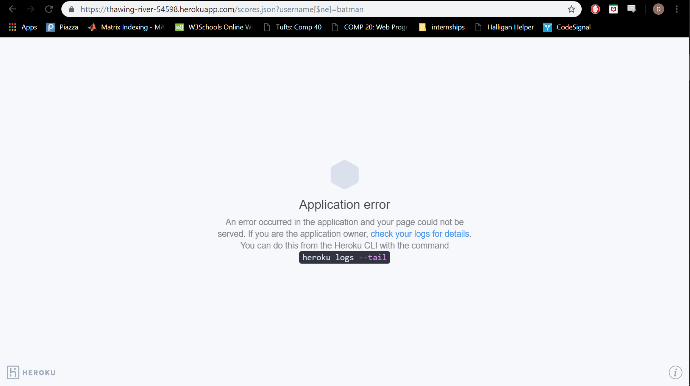

Security Report
Introduction
I was hired to find security risks within Samsam Dirie's 2048 Score Table through various attacking methods.
Methodology
My first test involved using xss with curl. I attempted to send an alert to the index page of Samsam's 2048 score board.
My second test was me just analyzing her code and using her website.
My third test was injection with query string. I attempted to access all the data within her database.
Abstract of Findings
From attacking Samsam's website, I have discovered few problems within her code. Her first problem is that her code does little to prvent XSS. Her second problem is that her /scores.json query string is broken. And lasty her third problem is that her code allows data injection.
Issues Found
First issue: XSS
- Issue: Prone to XSS
- Location: The issue was located within the post method (/submit)
- Severity: High. If wanted the hacker could completely destroy the website as any javascript could be executed.
- Description of issue: I found this vulnebility by looking at Samsam's code. I realized that she does not check client inputs.
- Resolution: Before posting the data, you could get rid of special characters such as <>
- Proof:
Second issue: Get /score.json malfunction
- Issue: Get /score.json malfunction
- Location: The issue was located within the get method (/scores.json) when given a query string
- Severity: Medium. When does client wants a dataset of a specific user, the client will not be able to.
- Description of issue: When you use query string to request a dataset of a specific user, the website crashes and needs to be rebuilt.
- Resolution: I believe that she has extra headers that are not necessary. She can get rid of those headers and just get the cors library.
- Proof:
Third issue: Database Injection
- Issue: Prone to Database Injection
- Location: The issue was located within the get method (/scores.json)
- Severity: Medium. Had her /scores.json worked properly, the hacker could easily access data that is not meant for the public eye.
- Description of issue: Upon attempting to receive all data within her MongoDB, her website broke. However, had she implemented the /scores.json query string correctly, it would have been prone to database injection. I found this vulnebility by analyzing her code. I realized that she did little to check if the client input in the query string does not include special characters.
- Resolution: Add special character constraints when using the query string
- Proof:

Conclusion
With little adjustments, I believe that Samsam's 2048 Score Borad will function appropriately. However, her security of her data and her website seems to be weak. It definitely needs more security checks that are not even stated within this report.
References
https://tuftsdev.github.io/WebProgramming/notes/web_security.html
https://www.owasp.org/index.php/Top_10_2013-Top_10